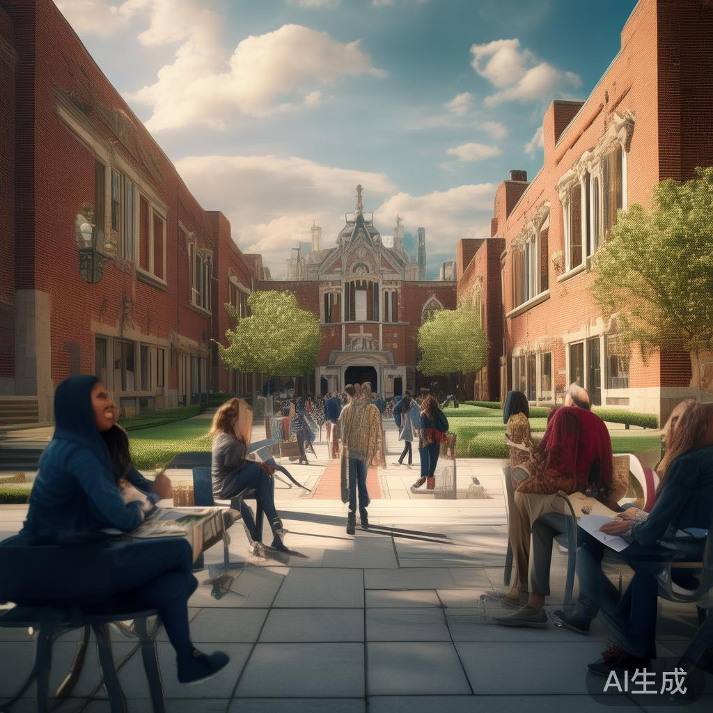

Netanyahu opposes Iran war end deal, Trump defends diplomacy
Israeli Prime Minister Benjamin Netanyahu strongly opposes any deal meant to end the war with Iran, calling it too many concessions. President Trump defended the diplomatic approach, saying pressuring Iran through negotiations serves American interests. The U.S. threatens to resume military strikes to force Iran into real concessions, escalating Middle East tensions.
Samsung management reaches preliminary deal with union to avoid strike
Samsung Electronics management and union representatives reached a preliminary agreement after multiple rounds of negotiations, successfully avoiding a massive strike that could affect global chip supply. The deal includes better wages, benefits and working conditions. Samsung shares rose on news of stable supply expectations.
Trump concludes China visit, Xi invites him to White House in September
President Trump concluded his visit to China with President Xi inviting him to visit the White House on September 24. During the visit, both nations signed multiple trade deals with China committing to purchase over 200 Boeing aircraft and large quantities of American agricultural products. Trump called the visit extremely positive and productive.
Putin visits China for 25th time, Sino-Russian ties deepen
Russian President Putin arrived in Beijing for his 25th visit to China. President Xi held an official welcome ceremony. The two leaders held talks and jointly attended the opening of the China-Russia Year of Education. Multiple cooperation agreements were signed covering energy, infrastructure and technology. The deepening relationship draws close attention from the U.S. and Europe.
US and China sign billions in trade deals, Boeing jumbo orders
During the summit, the U.S. and China signed multiple trade agreements worth tens of billions of dollars. China committed to purchasing 200+ Boeing aircraft, GE engines and large quantities of American agricultural products. U.S. trade representatives expect Beijing to sign additional agricultural purchase deals worth billions.
Trump warns Iran 'clock is ticking', Middle East conflict risk remains
President Trump warned Iran on social media that 'the clock is ticking', threatening even fiercer strikes than before if no agreement is reached quickly. The U.S. presented five demands including Iran handing over 400kg of enriched uranium. Iran refused and military options are back on the table.
Ukraine war near end? Putin hints Moscow ready for ceasefire
President Putin hinted the Ukraine war may be nearing its end, saying Moscow is ready to end the conflict through negotiations. Ukraine cautiously welcomed the statement while the UN Secretary-General called on all parties to seize the opportunity. Battlefield uncertainty remains but hopes for a peaceful resolution are rising.
Shenzhou-23 crew conducts launch site drills for upcoming mission
The Shenzhou-23 manned spaceflight mission conducted full-system drills at the launch site, preparing for the upcoming launch. This is a critical step in China's space station construction. Astronauts will conduct multiple scientific experiments and technical tests in orbit. China's manned space program proceeds on schedule.
Japanese PM visits South Korea, holds summit with President Lee
Japanese Prime Minister Sunae Wasae visited South Korea for a summit with President Lee Jae-myung. The two leaders exchanged views on energy security, trade cooperation and regional situations. This marks the first official visit by a Japanese PM in years, signaling a thaw in bilateral relations. Both agreed to establish regular foreign minister-level consultations.
UN Secretary-General warns Strait of Hormuz blockade is global crisis
The UN Secretary-General warned during a visit to Japan that the blockade of the Strait of Hormuz is triggering a global crisis, severely impacting shipping, energy supply and the world economy. He called on all parties to exercise restraint and restore dialogue to protect international waterways.
Iran rejects U.S. conditions, nuclear talks at impasse
Iran rejected multiple American conditions including handing over 400kg of enriched uranium and reducing to a single nuclear facility. An Iranian military spokesman warned any military action would result in even fiercer retaliation. Iran believes time is on its side with a hardline stance, making nuclear talks outlook bleak.
US-China summit discusses Taiwan, Trump says no troops for Taiwan
The US-China summit addressed the Taiwan issue. President Trump stated Washington has no conflict with Beijing over Taiwan and would not make any promises to Xi on the matter. The U.S. Defense Department said Taiwan arms sales are under review. Taiwan emerged as a core focus of the summit.
CIA director visits Cuba, discusses energy crisis and humanitarian aid
CIA Director John Ratcliffe visited Cuba for talks on the energy crisis and humanitarian assistance. U.S. Secretary of State Marco Rubio accused the Cuban government of lying about American aid offers. Cuba faces a deepening energy crisis with power shortages triggering public protests.
China restricts critical mineral exports to U.S., semiconductor supply war escalates
China announced restrictions on exporting critical minerals to the U.S., including gallium and germanium essential for semiconductor manufacturing. This counters American tech restrictions and will significantly impact global semiconductor supply chains. The U.S. Commerce Department is evaluating supply chain security risks.
G7 finance ministers agree on AI model risk countermeasures
G7 finance ministers and central bank governors meeting in Japan agreed to compile specific countermeasures for managing risks of advanced AI models. Japan had previously proposed interim AI risk guidelines receiving positive response. Discussions covered AI impacts on financial stability and employment, with agreement to strengthen cross-border regulatory cooperation.
Digital yuan cross-border payment expands to 50 countries and regions
The digital yuan internationalization achieved major progress as cross-border payment services expanded to 50 countries and regions worldwide, covering major economies across Asia, Europe, Africa and the Americas. Cross-border e-commerce, tourism and overseas study remittance applications are growing rapidly with monthly transaction volume exceeding 100 billion yuan.
German manufacturing PMI rises for sixth consecutive month, strong recovery
Germany's Federal Statistical Office reported the manufacturing PMI remaining in expansion territory for six consecutive months, with industrial output exceeding market expectations. Machinery, automotive, chemical and other pillar industries reported ample orders with foreign trade growing. Analysts say the German economy is fully recovering from the energy crisis impact.

Serbian president to visit China, boost comprehensive strategic partnership
At the invitation of President Xi Jinping, the Serbian president will pay a state visit to China. During the visit, the two countries will sign multiple cooperation agreements covering trade, infrastructure, technology and culture. Serbia is China's important partner in Central and Eastern Europe, and this visit will further deepen traditional friendship.
US and China issue AI joint statement, promote AI safety governance
The U.S. and China issued a joint AI statement during the summit, reaching important consensus on AI ethics, technology risk management and cross-border data flows. Both countries will jointly promote a global AI governance framework to prevent AI misuse in military and intelligence domains. This sets an important example for international AI governance.
Global renewable energy investment exceeds fossil fuels for first time
The IEA annual report shows global renewable energy investment reached $1.8 trillion in 2026, exceeding fossil fuel investment for the first time. Solar and wind power costs continue to drop, becoming more economical than fossil fuels. China, the EU and the U.S. lead the global clean energy transition with carbon neutrality paths becoming clearer.
💬 评论区